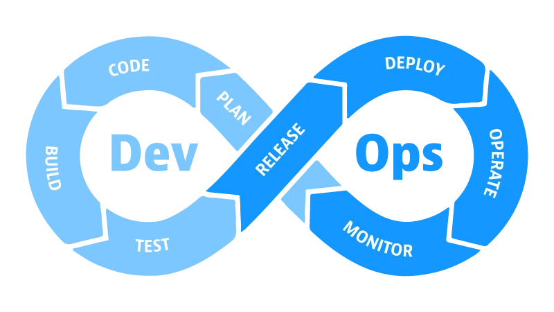

DevOps: Saiba mais sobre esse conceito
DevOps une desenvolvimento e operações para entregas contínuas, confiáveis e de alta qualidade.
Introdução
A DevOps, uma junção de "Desenvolvimento" (Dev) e "Operações" (Ops), representa uma abordagem fundamentalmente colaborativa para o ciclo de vida do desenvolvimento de software. Mais do que apenas uma metodologia,
o DevOps é uma mentalidade que visa integrar e automatizar processos, reduzir a lacuna entre desenvolvedores e operadores de sistemas e promover uma entrega contínua e confiável de software.
Essa abordagem abraça a automação em todos os estágios do desenvolvimento e da implantação, desde a integração contínua até a entrega contínua (CI/CD). Isso permite que as equipes desenvolvam, testem, implantem e monitorem
aplicativos de forma rápida e consistente, garantindo uma resposta ágil às mudanças e aos requisitos do mercado.
Além disso, o DevOps encoraja uma cultura de responsabilidade compartilhada, onde os desenvolvedores assumem mais responsabilidades operacionais e os operadores ganham uma melhor compreensão do código e das necessidades do
negócio. Isso resulta em equipes mais ágeis, capazes de identificar e corrigir problemas mais rapidamente, além de iterar e inovar de forma mais eficiente.
Ao adotar os princípios do DevOps, as organizações podem esperar benefícios como redução de tempo de lançamento, aumento da qualidade do software, melhor colaboração entre equipes, maior estabilidade operacional e, em última
análise, uma capacidade aprimorada de responder às demandas dos clientes e do mercado.
Conceitos
• Integração e entrega contínuas (CI/CD):
Automatiza o processo de desenvolvimento e entrega de software, permitindo que as equipes lancem novas funcionalidades com mais frequência e confiabilidade. CI/CD envolve a integração contínua (CI), onde o código é integrado
e testado automaticamente várias vezes ao dia, e a entrega contínua (CD), que automatiza a implantação do código em diferentes ambientes, como desenvolvimento, teste e produção.
• Automação:
Automatiza tarefas repetitivas, liberando tempo para que as equipes se concentrem em atividades mais estratégicas. A automação no contexto do DevOps abrange desde a construção e testes de código até o provisionamento e
gerenciamento de infraestrutura, garantindo eficiência e consistência em todo o ciclo de vida do desenvolvimento de software.
• Monitoramento e observabilidade:
Monitora o desempenho e a saúde do sistema, permitindo que as equipes identifiquem e resolvam problemas rapidamente. Isso envolve o uso de ferramentas de monitoramento que coletam dados em tempo real sobre o desempenho do
aplicativo, a utilização de recursos e os eventos do sistema, proporcionando insights valiosos para aprimorar a confiabilidade e a eficácia operacional.
• Cultura de colaboração:
Promove a colaboração e a comunicação entre as equipes de desenvolvimento e operações. Uma cultura de colaboração no DevOps incentiva a quebra de barreiras entre as diferentes funções e departamentos, incentivando o
compartilhamento de conhecimento, a resolução colaborativa de problemas e o alinhamento de objetivos em toda a organização.
Aplicações
O DevOps oferece uma ampla gama de benefícios e aplicações em organizações que desenvolvem e operam software. Sua abordagem colaborativa e orientada para processos eficientes pode ser especialmente vantajosa para empresas
que enfrentam desafios específicos no mercado atual.
Uma das principais aplicações do DevOps é a capacidade de lançar novos produtos e serviços com mais rapidez. Em um cenário competitivo, onde a agilidade é essencial, o DevOps pode reduzir significativamente o tempo
necessário para implementar novas funcionalidades, permitindo que as empresas respondam mais rapidamente às demandas do mercado e mantenham-se à frente da concorrência.
Além disso, o DevOps é fundamental para melhorar a qualidade e confiabilidade do software. Ao automatizar processos de desenvolvimento, teste e implantação, as equipes podem identificar e corrigir bugs com mais eficiência,
resultando em um software mais estável e confiável. Isso não apenas melhora a experiência do cliente, mas também aumenta a satisfação e a fidelidade do usuário.
Outro benefício importante é a redução de custos. A automação de tarefas repetitivas e a otimização do uso de recursos podem resultar em economias significativas em desenvolvimento e operações de software. Isso permite que
as empresas direcionem seus recursos para áreas mais estratégicas e inovadoras, aumentando sua competitividade no mercado.
Ainda, o DevOps aumenta a agilidade das organizações, permitindo que respondam rapidamente às mudanças no mercado e nas necessidades dos clientes. Ao adotar uma abordagem iterativa e colaborativa, as empresas podem
adaptar-se mais facilmente às novas demandas e aproveitar oportunidades emergentes, garantindo sua relevância e sucesso a longo prazo.
Em resumo, o DevOps é uma ferramenta poderosa para empresas que buscam acelerar o desenvolvimento de software, melhorar sua qualidade e confiabilidade, reduzir custos e aumentar sua agilidade no mercado dinâmico de hoje.
Ao implementar práticas DevOps eficazes, as organizações podem obter uma vantagem competitiva significativa e alcançar o sucesso sustentável a longo prazo.
Benefícios, Desafios e Ferramentas
• Benefícios
O DevOps, ao integrar desenvolvimento e operações de TI, oferece uma série de benefícios para as empresas que buscam melhorar sua eficiência e capacidade de resposta no mercado dinâmico de hoje.
Entre os principais benefícios do DevOps está o aumento da velocidade de entrega. Ao automatizar processos e eliminar gargalos, o DevOps pode reduzir significativamente o tempo necessário para lançar novas funcionalidades,
permitindo que as empresas respondam mais rapidamente às demandas do mercado.
Além disso, o DevOps contribui para uma melhor qualidade do software, reduzindo o número de bugs e problemas. Através da automação de testes e processos de garantia de qualidade, as equipes podem identificar e corrigir
falhas de forma mais eficiente, garantindo um software mais estável e confiável.
A maior confiabilidade também é um benefício importante do DevOps. Ao adotar práticas de automação e monitoramento contínuo, as empresas podem garantir que seu software esteja sempre disponível e funcione de forma
consistente, aumentando a satisfação do cliente e a confiança no produto.
Além disso, o DevOps pode ajudar a reduzir os custos de desenvolvimento e operação de software. A automação de tarefas repetitivas e a otimização do uso de recursos podem resultar em economias significativas, permitindo que
as empresas alcancem eficiência operacional e reduzam seus gastos.
• Desafios
No entanto, implementar o DevOps também apresenta desafios significativos. Uma mudança cultural é necessária, pois o DevOps requer uma mentalidade de colaboração e compartilhamento de responsabilidades entre equipes
anteriormente separadas. A automação de tarefas repetitivas pode ser complexa e exigir expertise técnica, enquanto o monitoramento e observabilidade em ambientes complexos podem apresentar desafios adicionais.
A segurança também é uma consideração importante ao implementar o DevOps. Garantir a integridade e a proteção dos dados em um ambiente ágil e automatizado requer práticas de segurança robustas e uma abordagem proativa para
identificar e mitigar vulnerabilidades.
• Ferramentas
Para superar esses desafios, as empresas podem recorrer a uma variedade de ferramentas DevOps disponíveis no mercado, as principais são:
Jenkins: Jenkins é uma ferramenta de automação de integração contínua e entrega contínua (CI/CD) amplamente utilizada. Ela permite que equipes de desenvolvimento automatizem o processo de compilação, teste e implantação
de software de forma contínua e repetitiva. Jenkins oferece uma interface intuitiva e suporte a uma vasta gama de plugins, tornando-a altamente flexível e adaptável aos diversos ambientes de desenvolvimento.
 Ansible: Ansible é uma ferramenta de automação de infraestrutura que permite provisionar, configurar e gerenciar sistemas de forma eficiente e consistente. Baseado em YAML e SSH, Ansible simplifica tarefas de automação
complexas, como a configuração de servidores, o provisionamento de máquinas virtuais e a implantação de aplicativos, tornando-as facilmente reproduzíveis e escaláveis.
Ansible: Ansible é uma ferramenta de automação de infraestrutura que permite provisionar, configurar e gerenciar sistemas de forma eficiente e consistente. Baseado em YAML e SSH, Ansible simplifica tarefas de automação
complexas, como a configuração de servidores, o provisionamento de máquinas virtuais e a implantação de aplicativos, tornando-as facilmente reproduzíveis e escaláveis.
 Nagios: Nagios é uma ferramenta de monitoramento de sistemas que oferece visibilidade em tempo real sobre o desempenho e a saúde da infraestrutura de TI. Com recursos avançados de alerta e notificação, Nagios permite que
as equipes identifiquem e respondam rapidamente a problemas de desempenho, garantindo a disponibilidade e confiabilidade dos sistemas críticos.
Nagios: Nagios é uma ferramenta de monitoramento de sistemas que oferece visibilidade em tempo real sobre o desempenho e a saúde da infraestrutura de TI. Com recursos avançados de alerta e notificação, Nagios permite que
as equipes identifiquem e respondam rapidamente a problemas de desempenho, garantindo a disponibilidade e confiabilidade dos sistemas críticos.
 Docker: Docker é uma plataforma de contêineres que simplifica o processo de empacotamento, distribuição e execução de aplicativos em ambientes isolados. Com Docker, os desenvolvedores podem criar contêineres leves e
portáteis que incluem todas as dependências necessárias para executar seus aplicativos, facilitando a implantação consistente em diferentes ambientes de desenvolvimento e produção.
Docker: Docker é uma plataforma de contêineres que simplifica o processo de empacotamento, distribuição e execução de aplicativos em ambientes isolados. Com Docker, os desenvolvedores podem criar contêineres leves e
portáteis que incluem todas as dependências necessárias para executar seus aplicativos, facilitando a implantação consistente em diferentes ambientes de desenvolvimento e produção.

Conclusão
Em conclusão, o DevOps representa uma abordagem holística para o desenvolvimento e operação de software, que visa melhorar a colaboração entre equipes, automatizar processos e promover uma entrega contínua e confiável de
valor aos clientes. Ao integrar práticas como integração e entrega contínuas, automação, monitoramento e observabilidade, e uma cultura de colaboração, o DevOps oferece uma série de benefícios significativos, incluindo aumento
da velocidade de entrega, melhor qualidade e confiabilidade do software, redução de custos e aumento da agilidade organizacional.
No entanto, a implementação bem-sucedida do DevOps também apresenta desafios, como a necessidade de uma mudança cultural significativa, complexidades na automação de tarefas repetitivas, desafios de monitoramento em ambientes
complexos e considerações de segurança. Superar esses desafios requer uma abordagem estratégica, bem como o uso de ferramentas DevOps adequadas, como Jenkins, Ansible, Nagios e Docker, entre outras.
Em última análise, o DevOps oferece uma oportunidade única para as empresas transformarem suas operações de TI e acelerarem sua capacidade de inovar e se adaptar em um mercado cada vez mais competitivo e em constante mudança.
Ao abraçar os princípios e práticas do DevOps e investir em ferramentas e habilidades adequadas, as organizações podem alcançar um novo nível de eficiência, colaboração e sucesso no desenvolvimento e operação de software.